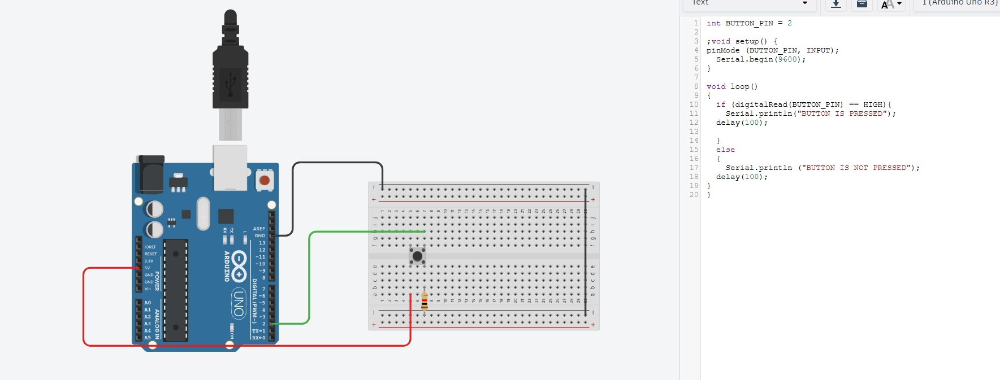
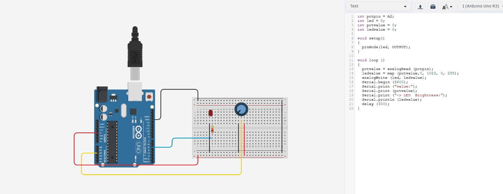
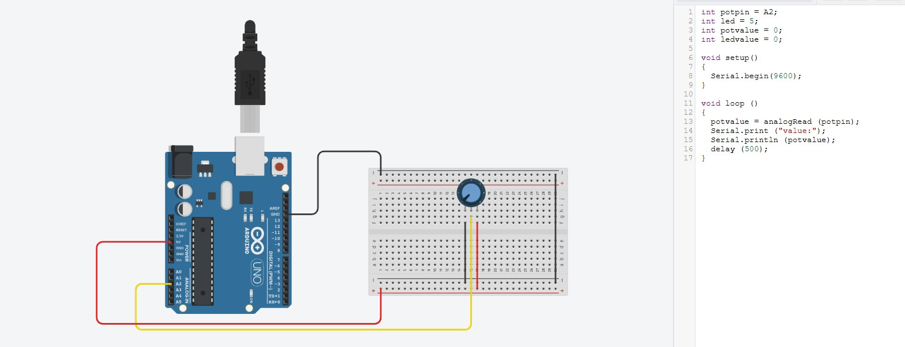
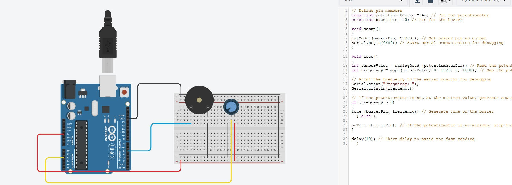
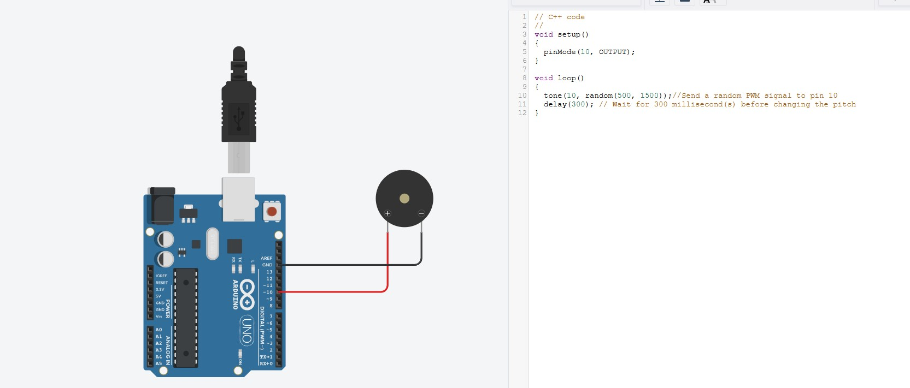
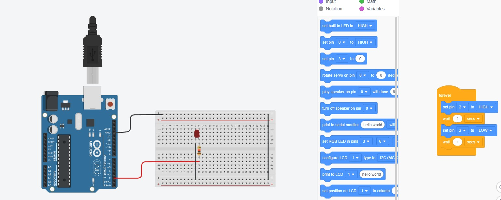

Arduino Robotics Projects
Push Button Experiment
We did this activity to understand how push buttons work with Arduino. Pressing the button sends a signal to the board, which we monitored using the serial monitor.
LED Brightness Control with Potentiometer
In this experiment, we used a potentiometer to control the brightness of an LED. It helped us learn about analog input and Pulse Width Modulation (PWM).
Potentiometer Sensor Reading
We experimented with a potentiometer and used it as an input sensor. We observed how it changes resistance, which is read as an analog value.
Controlling Buzzer Tone with Potentiometer
This activity allowed us to control the sound frequency of a buzzer using a potentiometer. By turning the knob, we could generate different tones.
Passive Buzzer Melody Sound
We created a melody using a passive buzzer by sending different PWM signals. It was exciting to make our own sound patterns with Arduino!
Active Buzzer Alarm Sound

For this project, we learned how to generate an alarm sound using an active buzzer. We used digital signals to turn it on and off at set intervals.
Blinking LED Experiment
We programmed an LED to blink on and off using a delay function. This was a simple but important step in learning how to control outputs with Arduino.